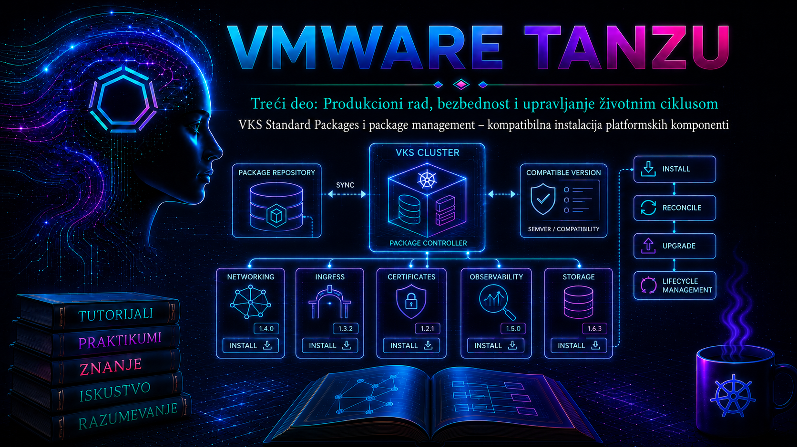

VMware & Tanzu

U prethodnoj lekciji uspostavljen je lanac poverenja od VKS klastera do container registry-ja. Ta osnova je neposredan preduslov za ovu lekciju: package manager preuzima OCI bundle-ove i image-e iz registry-ja, obrađuje deklarativne resurse i zatim stvarno stanje klastera usklađuje sa željenim. VKS Standard Packages predstavljaju verzionisanu i testiranu kolekciju platformskih komponenti za proširenje vSphere Kubernetes Service klastera, ali oznaka „standard” ne znači da je svaki paket automatski odgovarajući za svaku verziju VKS-a, Kubernetes-a ili za svaku topologiju.
Cilj administratora nije samo da komanda za instalaciju završi bez greške. Potrebno je dokazati poreklo repozitorijuma, kompatibilnost paketa, dostupnost svih zavisnih image-a, ispravnost konfiguracionih vrednosti, uspešan reconciliation i funkcionalnost servisa. Verzija repozitorijuma i verzija pojedinačnog paketa jesu dve različite odluke; obe moraju biti evidentirane i kontrolisane kroz change proces.
1. Terminologija i verzijski kontekst
Broadcom dokumentacija za aktuelna VMware Cloud Foundation 9 okruženja koristi naziv vSphere Kubernetes Service (VKS) i, zavisno od izdanja, VCF CLI komande oblika vcf package. Dokumentacija za vSphere 8 i ranija TKG Service okruženja često koristi nazive TKG Service i Tanzu Kubernetes Grid Service, kao i komande tanzu package. To nisu dva package manager-a koja treba paralelno koristiti, već generacije proizvoda, dokumentacije i klijentskih alata. Pre procedure proveravaju se verzija Supervisor-a, VKS servisa, workload klastera i instaliranog CLI plug-in-a.
| Element | Aktuelni VKS/VCF kontekst | vSphere 8/TKG Service kontekst | Administratorska odluka |
|---|---|---|---|
| CLI porodica | vcf package ..., kada je isporučena za izdanje |
tanzu package ... |
Koristiti CLI i plug-in koji podržava ciljna verzija VKS-a; ne prevoditi komande mehanički. |
| Identifikator paketa | Noviji paketi koriste <ime>.kubernetes.vmware.com |
Stariji paketi mogu koristiti <ime>.tanzu.vmware.com |
Identifikator preuzeti iz stvarnog kataloga, ne pretpostaviti ga iz naziva proizvoda. |
| Repozitorijum | VKS Standard Packages release usklađen sa VKS matricom | Odgovarajući Tanzu/VKS Standard repository za TKr/VKS nivo | Proveriti release notes i compatibility matrix pre promene taga ili digest-a. |
| Namespace | Repository, Package i PackageInstall su namespaced resursi. | Za postupak koji zahteva tkg-system koristiti upravo taj namespace. |
|
kubernetes.vmware.com zahteva odgovarajuću verziju package plug-in-a; Broadcom KB za migraciju navodi plug-in 3.4.0 ili noviji. Sadržaj kataloga nije stalan: Grafana je, na primer, uklonjena iz VKS Standard Package Repository od izdanja v1.23 u korist Helm implementacije. Pre nadogradnje repozitorijuma zato se proveravaju uklonjeni paketi i propisana migraciona putanja.
2. Arhitektura Carvel package management-a
VKS Standard Packages koriste Carvel format i deklarativni model koji izvršava kapp-controller. CLI je korisnički interfejs; izvor istine su Kubernetes custom resources. Razumevanje tih resursa omogućava dijagnostiku i kada CLI prikaže samo opštu poruku Reconcile failed.
| Resurs ili komponenta | Uloga | Šta administrator proverava |
|---|---|---|
PackageRepository |
Pokazuje na verzionisani OCI/imgpkg bundle sa definicijama paketa. | URL ili digest, registry autentikaciju, CA poverenje, namespace i uspešan reconcile. |
PackageMetadata |
Opisuje logički paket, identitet i namenu. | Da li je očekivani refName vidljiv u ciljnom namespace-u. |
Package |
Predstavlja određenu verziju, fetch/template/deploy tok, values schema-u i eventualna verzijska ograničenja. | Dostupne verzije, uključeni softver i Kubernetes/kapp-controller constraints. |
PackageInstall |
Deklariše instalaciju: paket, izbor verzije, ServiceAccount i Secret sa vrednostima. | Conditions, poruku kontrolera, generisani App i primenjenu verziju. |
App |
Izvršava fetch, template i deploy i periodično usklađuje stvarno sa željenim stanjem. | Fetch/template/deploy grešku, drift, status i controller logove. |
| Secret sa values | Čuva korisničku konfiguraciju koju PackageInstall prosleđuje paketu. | Schema validnost, pristup i odsustvo tajni iz Git-a ili komandne istorije. |
Kontroler preuzima repository bundle i iz njega objavljuje PackageMetadata i verzionisane Package objekte u namespace-u. PackageInstall bira verziju, a generisani App preuzima artefakte, renderuje konfiguraciju i primenjuje resurse. Kontroler periodično ponavlja proveru. Ručna izmena Deployment-a koji pripada paketu zato nije trajno rešenje: reconciliation je može vratiti, a drift otežava sledeći upgrade.
3. Kompatibilnost nije samo broj verzije
Podržana kombinacija zavisi od VKS Standard Packages release-a, Kubernetes/VKS verzije, verzije kapp-controller-a, paketa i njegovih zavisnosti. Package može sadržati kubernetesVersionSelection i kappControllerVersionSelection. Moderni kontroler odbija neusklađenu instalaciju, ali odsustvo tehničke blokade nije dokaz vendor podrške. Stariji kapp-controller pre 0.41.x ne sprovodi ova polja, a kapacitet, CNI, CSI, PSA, LoadBalancer i storage zahtevi mogu ostati van automatske provere.
- Release kompatibilnost: release notes i matrica za konkretan VKS i repository release.
- API kompatibilnost: paket ne sme zavisiti od Kubernetes API verzija uklonjenih iz ciljnog release-a.
- Infrastruktura: DNS, NTP, registry egress, proxy/no-proxy, CA lanac, CNI, LoadBalancer, StorageClass i resursi.
- Bezbednost: Pod Security Admission, privilegije, ClusterRole opseg, image provenance i tajne.
- Operativni uslovi: HA topologija, monitoring, backup, upgrade redosled i rollback.
packaging.carvel.dev/ignore-kubernetes-version-selection i packaging.carvel.dev/ignore-kapp-controller-version-selection mogu prisiliti pokušaj instalacije, ali ne stvaraju kompatibilnost. Prihvatljive su samo u izolovanom laboratorijskom testu; u produkciji se bira podržana verzija paketa ili se platforma nadograđuje propisanim redosledom.
4. Repozitorijum, namespace i lifecycle odluke
PackageRepository je namespaced izvor kataloga. PackageInstall po pravilu vidi Package resurse u svom namespace-u; repository dodat u proizvoljan namespace ne rešava instalaciju u tkg-system ili drugom ciljnom namespace-u. To je čest osnovni uzrok greške „package not found”. Centralizovano upravljanje ne znači automatski globalnu vidljivost Package objekata.
U produkciji se pin-uje odobren repository release, a kada postupak podržava digest, nepromenljivom digest-u daje se prednost nad promenljivim tagom. Promena repository-ja može promeniti skup verzija, ukloniti paket ili uvesti novi package domain. Pre nje se pravi inventar svih PackageInstall objekata, proveravaju release notes i migracije, pa se promena testira u neprodukcijskom klasteru.
5. Bezbednost lanca isporuke
- Razdvojiti read-only posmatranje od prava za kreiranje
PackageRepositoryiPackageInstallobjekata. - Koristiti namenski ServiceAccount i najmanji RBAC opseg koji paket podržava; pregledati ClusterRole i webhook resurse.
- Privatni CA uvesti podržanim mehanizmom; grešku
x509: certificate signed by unknown authorityne rešavati isključivanjem TLS provere. - Za air-gapped okruženje relocirati repository bundle i sve zavisne image-e podržanim
imgpkgpostupkom, uz očuvano image mapiranje. - Repository URL/digest i image poreklo evidentirati; credential i values tajne ne čuvati u otvorenom Git repozitorijumu.
- Pre upgrade-a sačuvati manifest PackageInstall-a, redigovane values, verzije i funkcionalni test; backup aplikacionih podataka je odvojen zadatak.
6. Administratorski CLI i dokazivanje stanja
Komande se izvršavaju sa administratorske radne stanice u kubeconfig kontekstu ciljnog VKS workload klastera. Sledeći blok je read-only. Najpre se proveravaju kontekst i verzije, pa se bira porodica vcf ili tanzu iz dokumentacije za stvarno izdanje.
kubectl config current-context
kubectl version
kubectl api-resources | grep -E 'packagerepositor|packagemetadata|packageinstall|packages'
# Aktuelni VKS/VCF CLI, ako ga izdanje podržava
vcf version
vcf package repository list -A
vcf package available list -A
vcf package installed list -A
# vSphere 8/TKG Service CLI generacija
tanzu version
tanzu plugin list
tanzu package repository list -A
tanzu package available list -A
tanzu package installed list -A
Direktni Kubernetes pregled je najvažniji dijagnostički sloj. Ove komande samo čitaju stanje; opcija -A sprečava zaključak da paket ne postoji samo zato što je administrator u drugom namespace-u.
kubectl get packagerepositories.packaging.carvel.dev -A
kubectl get packagemetadatas.data.packaging.carvel.dev -A
kubectl get packages.data.packaging.carvel.dev -A
kubectl get packageinstalls.packaging.carvel.dev -A
kubectl get apps.kappctrl.k14s.io -A
kubectl describe packagerepository STANDARD_REPO -n tkg-system
kubectl describe packageinstall PACKAGE_INSTALL -n tkg-system
kubectl get packageinstall PACKAGE_INSTALL -n tkg-system -o yaml
Za vrednosti se ne polazi od nasumičnog primera. Prvo se dobija values schema za tačan package refName i verziju. Sintaksa podkomande može se razlikovati između CLI generacija, pa je --help obavezni pre-check.
vcf package available get PACKAGE_REF -n tkg-system
vcf package available get PACKAGE_REF/VERSION --values-schema -n tkg-system
# Alternativa za Tanzu CLI generaciju
tanzu package available get PACKAGE_REF -n tkg-system
tanzu package available get PACKAGE_REF/VERSION --values-schema -n tkg-system7. Praktikum – kontrolisana instalacija paketa
7.1. Cilj, topologija i preduslovi
Cilj je registrovati odobren VKS Standard Packages repository, izabrati kompatibilan paket, instalirati ga deklarativno i dokazati funkcionalnost. Topologija obuhvata administratorsku Linux radnu stanicu, neprodukcijski VKS klaster, DNS/NTP, izlaz ka odobrenom Broadcom registry-ju ili internom mirror-u, funkcionalan CNI i, ako paket zahteva, LoadBalancer i StorageClass. Vežba je laboratorijska; produkcija zahteva odobren change, maintenance plan i paket-specifičan backup.
- Kubeconfig za workload klaster i nalog sa pravima za package resources.
kubectli tačna generacija VCF ili Tanzu CLI-ja sa package plug-in-om.- Zvanično potvrđeni repository URL/digest i compatibility podaci.
- Dokazana registry ruta, proxy/no-proxy, CA poverenje i image pull autentikacija.
- Sačuvano početno stanje i UTC vreme promene radi korelacije događaja i logova.
7.2. Pre-check i inventar
date -u
kubectl config current-context
kubectl get nodes -o wide
kubectl get --raw='/readyz?verbose'
kubectl get storageclass
kubectl get packagerepository,packageinstall -A
kubectl get events -A --sort-by=.lastTimestamp | tail -n 50
# Read-only snimak početnog stanja
kubectl get packagerepository,packageinstall -A -o yaml > package-state-before.yaml
kubectl get packages.data.packaging.carvel.dev -A -o wide > package-versions-before.txt
Node-ovi moraju biti Ready, API readiness provere uspešne i ne sme postojati aktivan package incident. Ako je klaster degradiran, instalacija se odlaže.
7.3. Dodavanje repozitorijuma
Sledeća operacija menja stanje. Placeholdere zameniti podacima iz zvanične dokumentacije za konkretan VKS release. Ne izvršavaju se obe CLI varijante.
# VCF CLI generacija
vcf package repository add STANDARD_REPO \
--url APPROVED_REPOSITORY_URL \
-n tkg-system
# ILI Tanzu CLI generacija
tanzu package repository add STANDARD_REPO \
--url APPROVED_REPOSITORY_URL \
-n tkg-systemUspeh nije samo povratni kod: repository mora završiti reconcile, a Package i PackageMetadata moraju postati vidljivi.
kubectl get packagerepository STANDARD_REPO -n tkg-system -w
kubectl describe packagerepository STANDARD_REPO -n tkg-system
kubectl get packagemetadata,packages -n tkg-systemOčekivano:
- status repozitorijuma pokazuje uspešan reconcile;
- opis nema aktivnu fetch, TLS ili authentication grešku;
- katalog sadrži očekivani package refName i podržane verzije.7.4. Izbor paketa i priprema vrednosti
Bira se paket koji postoji u katalogu release-a i čije zahteve laboratorija ispunjava. Najpre se pregledaju detalji i schema, zatim pravi minimalni values.yaml. Primer pokazuje obrazac, ne univerzalnu schema-u.
# values.yaml — uskladiti sa schema-om tačnog paketa
namespace: platform-package
# Package-specifične vrednosti dodati isključivo prema values schema-i.Proveravaju se planirani namespace, PSA zahtevi, Service tip, storage potrošnja, replike, tolerations i cluster-wide privilegije. Tajne se ne upisuju u fajl ako paket podržava reference na postojeći Secret.
7.5. Instalacija i višeslojna validacija
Instalacija menja stanje. Tačna verzija se pin-uje umesto nekontrolisanog praćenja svakog novog izdanja. Naziv VCF podkomande proveriti sa vcf package installed --help, jer se CLI površina može menjati.
# VCF CLI obrazac za izdanje koje podržava create
vcf package installed create PACKAGE_INSTALL \
--package PACKAGE_REF \
--version PACKAGE_VERSION \
--values-file values.yaml \
-n tkg-system
# ILI Tanzu CLI generacija
tanzu package install PACKAGE_INSTALL \
--package PACKAGE_REF \
--version PACKAGE_VERSION \
--values-file values.yaml \
-n tkg-systemValidira se pet slojeva: PackageInstall, generisani App, Kubernetes workload, mrežna ili storage funkcija i Events.
kubectl get packageinstall PACKAGE_INSTALL -n tkg-system -o wide
kubectl describe packageinstall PACKAGE_INSTALL -n tkg-system
kubectl get apps.kappctrl.k14s.io -n tkg-system
kubectl get pods -A -o wide
kubectl get events -A --sort-by=.lastTimestamp | tail -n 80
# Zameniti stvarnim workload namespace-om i Deployment-om
kubectl rollout status deployment/DEPLOYMENT_NAME -n TARGET_NAMESPACE --timeout=5m
kubectl get all -n TARGET_NAMESPACE
Kriterijum završetka nije samo Running: PackageInstall i App moraju biti usklađeni, podovi spremni, Service endpoints popunjeni, PVC-ovi vezani i paket-specifičan test uspešan. Za ingress to je HTTP/TLS zahtev, za cert-manager izdavanje test sertifikata, a za log agent prijem kontrolisanog zapisa u backend-u.
7.6. Kontrolisana nadogradnja
Pre nadogradnje snimaju se manifest, redigovane values, funkcionalni rezultat i podaci. Proveravaju se ciljna verzija, release notes, breaking changes i zavisnosti. Repository upgrade i package upgrade razdvajaju se kada je moguće, jer se tako preciznije utvrđuje uzrok incidenta.
kubectl get packageinstall PACKAGE_INSTALL -n tkg-system -o yaml \
> packageinstall-before-upgrade.yaml
kubectl get packageinstall PACKAGE_INSTALL -n tkg-system \
-o jsonpath='{.spec.packageRef.versionSelection.constraints}{"\n"}'
# Read-only potvrda dostupnih verzija
vcf package available get PACKAGE_REF -n tkg-system
State-changing upgrade izvršava se sintaksom koju prikazuje instalirana generacija, na primer vcf package installed update --help ili tanzu package installed update --help. Zatim se ponavljaju sve validacije i proveravaju podaci i API ugovori korisničkih workload-a.
8. Troubleshooting – od simptoma do osnovnog uzroka
Dijagnostika počinje vremenom, poslednjom promenom, pogođenim klasterom i namespace-om. Ne brišu se odmah PackageInstall, App ili Secret: brisanje uklanja dokaze i može pokrenuti uklanjanje resursa. Redosled je status i Events, describe, App conditions, controller log, pa tek onda korekcija.
| Simptom | Neposredni uzrok | Dokaz | Bezbedna korekcija |
|---|---|---|---|
Repository je Reconcile failed; nema kataloga. |
DNS, ruta, proxy, TLS CA, autentikacija ili pogrešan OCI URL. | describe, Events i log sa x509, unauthorized, timeout ili manifest unknown. |
Ispraviti rutu/no-proxy, CA ili credential podržanim putem i potvrditi release URL; ne isključivati TLS. |
| Paket nije pronađen, repository je zdrav. | Pogrešan namespace opseg ili stari refName domen. | kubectl get packages -A i poređenje namespace-a/refName-a. |
Dodati repository u ciljni namespace i koristiti stvarni *.kubernetes.vmware.com ili legacy identifikator. |
| PackageInstall odbijen zbog version selection. | Kubernetes ili kapp-controller van constraint-a. | PackageInstall conditions i Package version-selection polja. | Izabrati kompatibilnu verziju ili nadograditi platformu; ne ignorisati constraint u produkciji. |
| App pada u template fazi. | Values ne odgovaraju schema-i ili overlay ne odgovara verziji. | App status, controller log i schema iste verzije. | Ispraviti values u izvoru istine; ne menjati renderovane resurse ručno. |
| Deploy uspe, podovi nisu Ready. | ImagePull, PSA/RBAC, CNI, LB, CSI, quota ili kapacitet. | Pod Events/log, endpoints, PVC i node conditions. | Otkloniti dokazanu zavisnost; ne povećavati privilegije naslepo. |
| Ručna izmena se vraća. | kapp-controller ispravlja drift. | App reconciliation i poređenje željenog sa stvarnim. | Promenu uneti kroz podržane values ili deklarativni izvor. |
Namespace i label selektori kontrolera razlikuju se po izdanju, pa ih prvo treba otkriti. Komande su read-only:
kubectl get pods -A | grep -E 'kapp-controller|package'
kubectl get events -A --sort-by=.lastTimestamp | tail -n 100
kubectl describe app APP_NAME -n tkg-system
# Posle otkrivanja stvarnog namespace-a i pod-a
kubectl logs -n CONTROLLER_NAMESPACE CONTROLLER_POD \
--since=30m --timestamps | grep -Ei 'PACKAGE_INSTALL|error|fail|x509|unauthorized|timeout'Nalaz odvaja simptom, posledicu, neposredni uzrok, osnovni uzrok, privremeno rešenje i trajnu meru. Primer: simptom je neuspešan reconcile, neposredni uzrok TLS odbijanje, a osnovni uzrok izostala distribucija novog Root CA posle rotacije. Trajna mera nije ponovni pokušaj instalacije, već kontrolisana trust distribucija i monitoring isteka sertifikata.
9. Rollback i povratak laboratorije
Vraćanje PackageInstall verzije ne vraća automatski podatke, CRD schema migracije ili eksterni sistem. Stateful paket zahteva vendor-podržan rollback i restore plan. Za novu laboratorijsku instalaciju bez podataka prvo se čuva dokaz, zatim briše package instalacija, potvrđuje uklanjanje, pa se repository uklanja samo ako više nije potreban nijednom paketu u namespace-u.
# Read-only dokaz
kubectl get packageinstall PACKAGE_INSTALL -n tkg-system -o yaml \
> packageinstall-final.yaml
kubectl describe app APP_NAME -n tkg-system > app-final.txt
# DESTRUKTIVNO: samo laboratorija bez potrebnih podataka
vcf package installed delete PACKAGE_INSTALL -n tkg-system
# Tek kada nijedna instalacija ne zavisi od repozitorijuma
vcf package repository delete STANDARD_REPO -n tkg-system
U Tanzu CLI generaciji koriste se dokumentovane komande tanzu package installed delete i tanzu package repository delete. Posle brisanja proveravaju se PackageInstall, App, package namespace, PVC/PV i cluster-scoped resursi. Preostali PVC ili CRD ne brišu se naslepo: mogu sadržati podatke ili ih koristiti drugi workload-i.
10. Administratorske prakse
- Voditi inventar: klaster, repository URL/digest i release, package refName/verzija, namespace, values revision, vlasnik i datum.
- Pinovati odobrene verzije i upgrade prvo testirati u klasteru koji predstavlja produkcioni CNI, CSI, PSA, proxy i registry.
- Repository, PackageInstall i redigovane values držati pod kontrolom verzija; tajne čuvati u odobrenom secrets sistemu.
- Za svaki paket definisati synthetic test, SLO signal, log izvor, backup predmet i rollback kriterijum.
- Ne mešati Supervisor Services, VKS Standard Packages i proizvoljne Helm chart-ove kao da imaju isti lifecycle i podršku.
- Pre VKS/Kubernetes upgrade-a proveriti sve pakete, uklonjene API-je, promenu domain-a i pakete uklonjene iz novog repository-ja.
- Incident završiti osnovnim uzrokom, korektivnom merom, dokazom oporavka i zaštitom od ponavljanja.
11. Završna kontrolna tačka
Administrator je spreman za samostalan rad kada može da:
- objasni tok od OCI repository bundle-a preko Package/PackageInstall do App reconciliation-a;
- utvrdi da li okruženje zahteva
vcf packageilitanzu packagei izabere pravi refName; - dokaže kompatibilnost VKS-a, Kubernetes-a, kapp-controller-a, repozitorijuma i paketa;
- registruje repository u pravilnom namespace-u, pročita schema-u i izvede pinovanu instalaciju;
- validira PackageInstall, App, workload i stvarnu funkciju servisa, a ne samo CLI izlaz;
- razlikuje registry/TLS, namespace/refName, constraint, template i runtime kvar;
- izvede bezbedan laboratorijski cleanup i objasni poseban plan za stateful rollback.
Zaključak
VKS Standard Packages daju deklarativan način za proširenje klastera platformskim komponentama, ali nisu zamena za arhitektonsku procenu i change governance. Pouzdana instalacija počinje podržanim repository release-om, ispravnim namespace opsegom i lancem poverenja, nastavlja se pinovanom verzijom i schema-validnim vrednostima, a završava funkcionalnim testom i dokazom reconciliation-a. Najveći rizici nastaju kada se pomešaju generacije CLI-ja i identifikatora, ignorišu constraints, ručno menja kontrolisani resurs ili pretpostavi da uspešan Pod znači zdrav servis. Odgovoran administrator zato upravlja kompletnim lifecycle-om: inventarom, kompatibilnošću, bezbednošću, observability-jem, nadogradnjom i oporavkom.